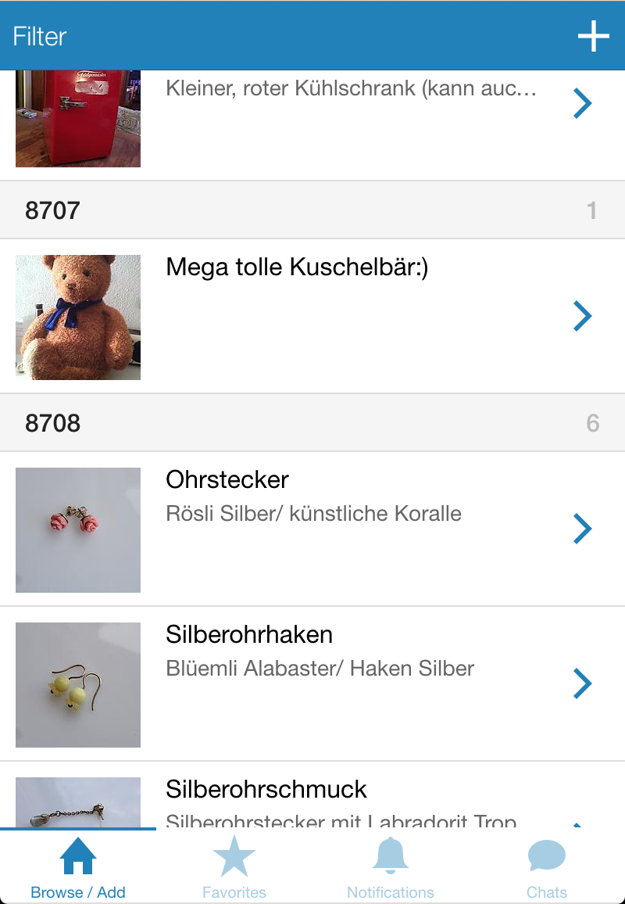

Basaar
Mit Basaar können nicht mehr benötigte Gegenstände schnell und einfach den Besitzer wechseln. Basaar kombiniert Brockenhaus, Flohmarkt und Internetauktionshaus – das Besondere dabei: Es wird alles verschenkt. Als Faustregel gilt: Solange man es anfassen kann, gibt es auf Basaar Platz dafür.
Häufig gestellte Fragen
Was kann ich auf Basaar stellen?
Im Prinzip alles. Egal ob die Kaffeetasse deiner Grossmutter, neue Schulbücher oder einen Barhocker, der ein wenig schief steht. Basaar kombiniert Brockenhaus, Flohmarkt und Internetauktionshaus – das Besondere dabei: Es wird alles verschenkt. Als Faustregel gilt: Solange man es anfassen kann, gibt es auf Basaar Platz dafür. Je hochwertiger der Gegenstand und je besser die Präsentation, desto wahrscheinlicher wirst du ihn auch los. Dienstleistungen oder ähnliche Angebote sind bei uns nicht erlaubt.
Wie kann ich ein Angebot melden, welches gegen die Regeln verstösst?
Dafür wählst du zuerst im Browse/Add-Menü das betroffene Angebot aus. Dort hast du über den Share-Button unten rechts die Möglichkeit, auf Missbrauch melden zu drücken. Daraufhin wird automatisch eine Benachrichtigung ans Basaar-Team geschickt und wir kümmern uns darum.
Wieso muss ich bei der Registrierung die Postleitzahl meines Wohnortes angeben und wie kann ich diese nachträglich verändern?
Deine Postleitzahl wird benötigt, damit du möglichst viele Angebote siehst, die in deiner Nähe aufgeschaltet wurden. Zudem können dadurch andere User aus der Umgebung Interesse an deinen Angeboten melden. Deine Postleitzahl kann jederzeit im Profil geändert werden.
Kann ich für meine Angebote auf Basaar Geld verlangen?
Nein, alle Gegenstände auf Basaar werden verschenkt. Ausserdem funktioniert Basaar nicht über Tauschhandel: Das bedeutet, dass du nicht etwas auf Basaar stellen musst, um Interesse an anderen Angeboten melden zu können.
Wie kann ich einen Gegenstand von einer anderen Person erhalten?
Wenn du im Browse/Add-Menü ein Angebot auswählst, kannst du dort Interesse daran melden. Daraufhin kann der Besitzer entscheiden, ob er dir den Gegenstand verschenkt oder nicht – in beiden Fällen wirst du benachrichtigt. Falls du ausgewählt wurdest, öffnet sich automatisch ein Chat zwischen dir und dem Besitzer (siehe nächste Frage).
Wie funktioniert die Übergabe?
Der Ablauf der Übergabe erfolgt ausschliesslich zwischen den beiden Usern; Basaar hält sich da raus. Im Chat-Menü könnt ihr die nötigen Details wie z.B. den Ort der Übergabe besprechen. Im Idealfall hat der Besitzer bereits im Angebot selbst den gewünschten Ablauf vermerkt.
Wie finanziert sich Basaar?
(Gar nicht. Wir haben kein Geld für Essen mehr.) Im Ernst: Basaar finanziert die Spesen momentan mit ein wenig Werbung. Eine kostenpflichtige Pro-Version ohne Werbung und mit zusätzlichen Funktionen für die User ist in Planung.